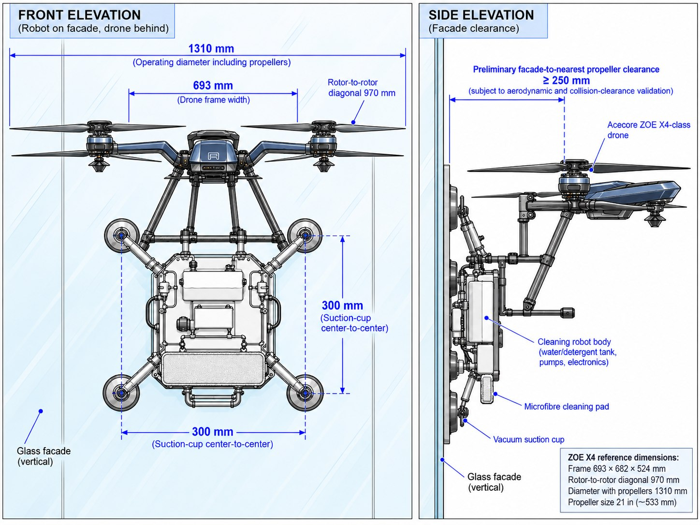
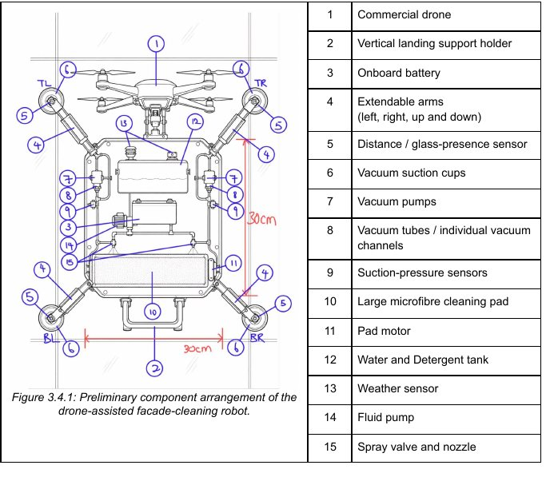
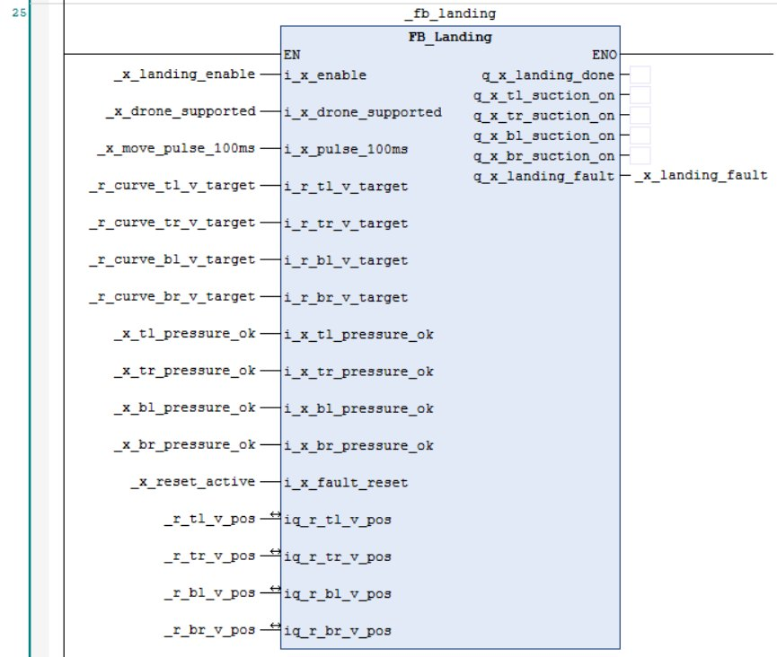
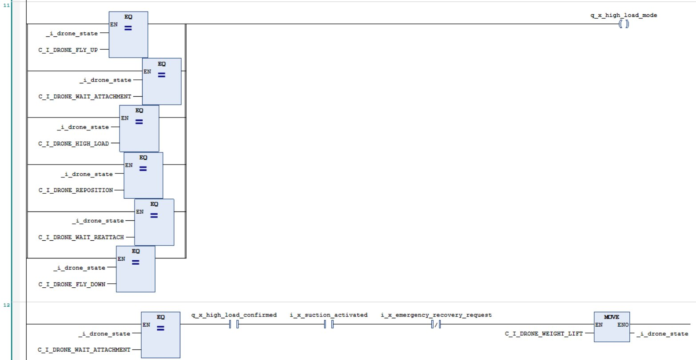
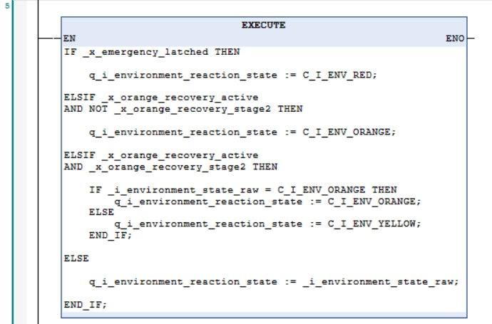
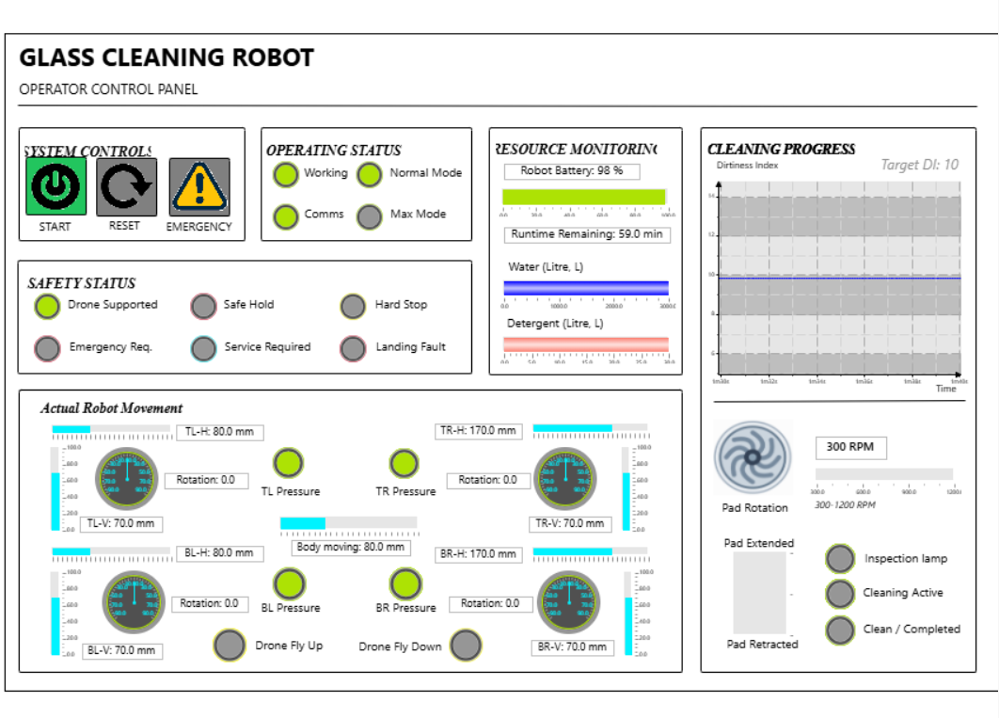
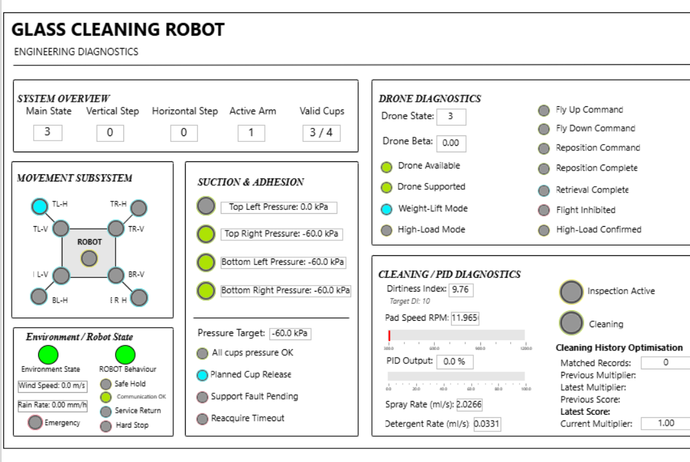
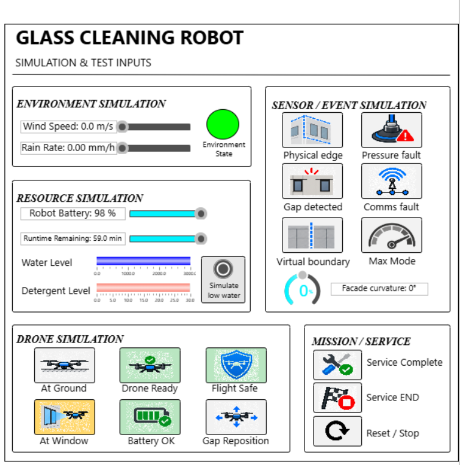
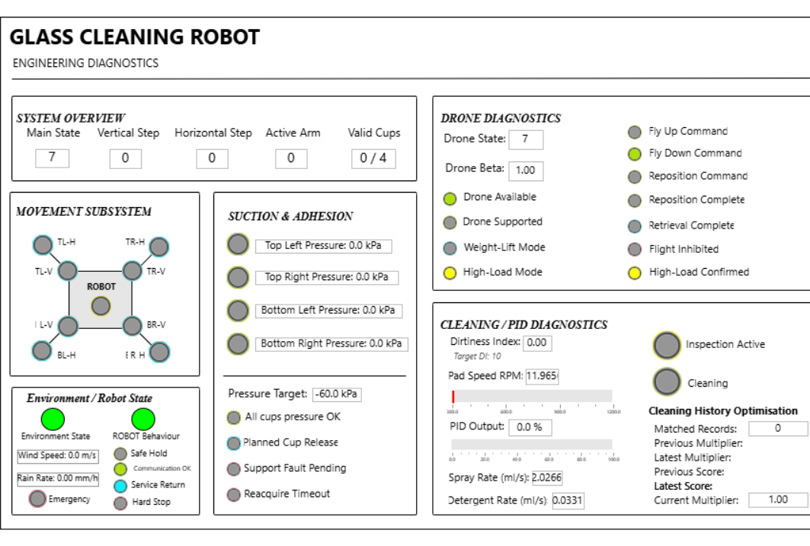
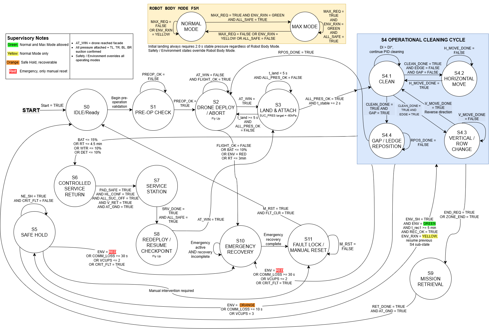

Autonomous Drone-Assisted Robot for Safe High-Rise Glass Cleaning
A PLC-based concept and simulated control system for a facade-cleaning robot supported by a drone, integrating motion control, attachment logic, safety responses and operator interfaces.

Project overview
The concept combines drone deployment, four suction attachments and a cleaning mechanism to work across high-rise glass. During cleaning, the drone offers support; PLC state logic supervises attachment confirmation, movement, cleaning, safe hold, repositioning and recovery. This project was validated through simulation scenarios rather than full physical deployment.
My contribution
- Developed the robot's horizontal movement logic for left-to-right and right-to-left cleaning passes, plus vertical downward movement.
- Created all three HMI pages: operator control, engineering diagnostics, and simulation/test inputs.
- Developed the overall finite-state-machine (FSM) diagram and integrated subsystem behaviour.
- Reworked and integrated substantial drone-support and safety-control logic in addition to my movement subsystem.
- Implemented most of the integrated PLC logic except the dedicated cleaning and communications subsystems.
Team structure & tools
Five team members initially divided work into movement, cleaning, drone, safety and communications subsystems. I took responsibility for movement and significantly revisited drone and safety logic during integration. The complete CODESYS program spans more than 300 ladder-logic rungs across function blocks and main PLC logic.
How the robot operates
A drone delivers the robot to the facade. The system checks suction pressure and attachment stability before allowing movement or cleaning. The robot performs alternating horizontal passes and steps downward to cover successive rows. Movement and cleaning pause when safety conditions are not met. The drone is used in the proposed design for deployment, retrieval, high-load support and gap repositioning.
System design and PLC development




Three HMI pages - designed and developed by me
I created the Operator Control Panel, Engineering Diagnostics and Simulation & Test Inputs pages. These original HMI screenshots show the control interface and simulation inputs used to validate different robot states. Select any screenshot to view it at full resolution.




Overall finite-state machine (FSM)
I developed this full system-level FSM to coordinate pre-operation checks, drone deployment, landing and attachment, horizontal and vertical cleaning, gap and ledge repositioning, safe hold, controlled service return, mission retrieval and emergency recovery. The FSM was used as a control and integration reference.

Media credit: Cover image AI-generated from our team sketch. Ladder screenshots are examples only; the full PLC project exceeds 300 rungs. The page includes my HMI designs and the overall FSM diagram. HMI screenshots show simulated states, not physical field operation.